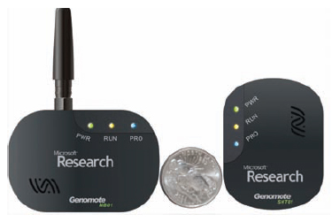

- Projeto Genome.
- Objetivo: monitorar temperatura em datacenters.
- Gerenciamento da temperatura é um grande problema.
- Muito da energia consumida utilizada para resfriamento.
- Monitoramento em tempo real permite controle eficiente.

* Figura adaptada de Liu et al., “Project Genome: Wireless Sensor Network for Data Center Cooling”.